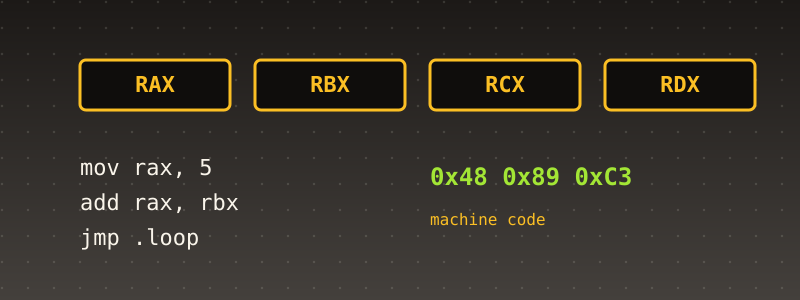

Appendix A. Introduction to x86 Assembly¶

This appendix exists because the book you just read assumes you already know how to read a file like 001_boot.asm. If you don't yet, this is where that gets fixed. It is a self-contained primer on x86 assembly language — specifically the 32-bit "protected mode" dialect this book's own kernel is written in, assembled with NASM — covering enough of the real architecture that you could, after reading it, open any .asm file in this book's own docs/partNN/code/ directories and understand exactly what it does and why it has to be written that way.
It is not a complete reference to the x86 instruction set, which runs to thousands of pages across Intel's and AMD's own official manuals. It is everything an ordinary systems programmer actually uses in practice, explained from first principles, with real examples pulled directly from this book's own code wherever one illustrates the point better than an invented snippet would.
1. What assembly actually is¶
A CPU does not understand C, or Python, or any other language with variables, loops, or function calls as such. A CPU understands a fixed, small vocabulary of instructions — move this value from here to there, add these two numbers, jump to this address if that comparison came out zero — each one encoded as a sequence of raw bytes (machine code) that the CPU's own decoder reads and executes one instruction at a time.
Assembly language is the thinnest possible human-readable skin over that machine code: one assembly instruction almost always corresponds to exactly one machine instruction, in the same order, with no hidden control flow and no implicit anything. Where a C compiler decides, on your behalf, how to lay out a for loop in terms of comparisons and jumps, in assembly you write the comparisons and jumps yourself, explicitly, in the exact order the CPU will execute them.
This is why this book needed assembly at all, in an otherwise overwhelmingly C codebase: a handful of real, specific jobs genuinely cannot be expressed in C, because C itself assumes things assembly cannot assume yet — that a stack already exists, that a return address on the stack means what C's own call/ret convention expects it to mean, that general-purpose registers are free for the compiler to allocate as it pleases. Every chapter's own .asm files in this book exist at exactly the handful of places where one of those assumptions is not yet true: the very first instruction the CPU executes after boot (no stack exists yet), the entry point of every interrupt handler (the CPU just forcibly interrupted whatever was running, mid-instruction, and every register has to be saved by hand before any C function can safely run), and the exact instant a task switch swaps one call stack for another (esp itself has to change, which no C statement can express).
2. Registers: the CPU's own, tiny, fixed set of variables¶
A register is a small, fixed piece of storage built directly into the CPU itself — reading or writing one is far faster than reading or writing memory, which is exactly why a CPU has so few of them (compared to how much RAM a machine has) and why using them well is most of what makes assembly fast.
This book's own 32-bit (BITS 32) code uses the IA-32 register set, inherited with only minor renaming from the original 16-bit 8086 of 1978 — every 32-bit register's own name starts with E ("Extended") precisely because it is the 16-bit register of the same short name, widened to 32 bits.
General-purpose registers (eight of them, each 32 bits wide):
| 32-bit | 16-bit | 8-bit (low) | Conventional use (not enforced by hardware) |
|---|---|---|---|
eax |
ax |
al |
the accumulator — arithmetic results, function return values |
ebx |
bx |
bl |
general purpose — this book's own isr128.asm uses it for a syscall's second argument |
ecx |
cx |
cl |
loop counters; the implicit count for shift/rotate instructions |
edx |
dx |
dl |
general purpose; paired with eax for 64-bit arithmetic results |
esi |
si |
— | "source index" — the source pointer for string instructions |
edi |
di |
— | "destination index" — the destination pointer for string instructions |
ebp |
bp |
— | "base pointer" — conventionally the base of the current stack frame |
esp |
sp |
— | "stack pointer" — always points at the top of the current stack |
None of these "conventional uses" are enforced by the hardware — eax is not magically faster at arithmetic than ebx is. They are conventions, followed by compilers and calling conventions (Section 8) so that code written by different people, or different tools, can cooperate. esp is the one real exception: several instructions (push, pop, call, ret) read and write it implicitly, so treating it as "the stack pointer and nothing else" is not optional.
Segment registers (six of them, each 16 bits): cs (code segment), ds (data segment), ss (stack segment), es, fs, gs. In the real-mode era these held an actual memory segment's own base address, shifted. This book's kernel runs in a flat memory model (Chapter 3's own GDT) where every segment register's own selector points at a descriptor covering the entire 4 GiB address space — so segmentation is, deliberately, made to do nothing. You will see cs/ds loaded with fixed selector values (0x08, 0x10) in this book's own early boot and GDT code, and essentially never touched again.
eip (the instruction pointer) always holds the address of the next instruction to execute. You cannot mov into eip directly — the only ways to change it are jmp, call, ret, a conditional jump, or iret, each of which has its own real rules about what else happens at the same time (Section 7).
eflags is a 32-bit register where individual bits, not the whole register, each mean something — a "flags register." The ones this book's own code actually reads or sets:
- ZF (Zero Flag) — set when an arithmetic or compare instruction's own result was zero.
je/jzbranch on this. - CF (Carry Flag) — set when an unsigned operation overflowed (or underflowed).
jc/jbbranch on this. - SF (Sign Flag) — set to the result's own most-significant bit (i.e., "was the signed result negative").
- OF (Overflow Flag) — set when a signed operation overflowed.
- IF (Interrupt Flag, bit 9) — when clear, the CPU ignores every maskable hardware interrupt.
cliclears it,stisets it. This book's own046_idt.c(Chapter 46) reads this exact bit directly, viapushfl/popl, to decide whether to restore interrupts after a critical section.
3. Real mode, protected mode, and why this book only ever uses the latter¶
The original 8086 only ever addressed memory in real mode: 20-bit addresses built from a 16-bit segment register shifted left 4 bits, plus a 16-bit offset — a maximum of 1 MiB of memory, no memory protection of any kind, and any code could read or write any address, including the CPU's own most privileged structures.
Protected mode, introduced with the 80286 and matured on the 80386 (the first true 32-bit x86), adds real memory protection: a Global Descriptor Table (Chapter 3) that defines what each segment selector is actually allowed to access and at what privilege level, and — once paging is enabled (Chapter 8) — a page-table-based virtual memory system that can give each process its own private address space.
This book never writes a single line of real-mode code, because GRUB has already done that work: by the time _start (Chapter 1's own 001_boot.asm) receives control, the Multiboot2 specification guarantees the CPU is already in 32-bit protected mode, with a valid (if minimal) GDT, paging disabled, and interrupts disabled. Every instruction in every .asm file in this book assumes that starting point.
4. Reading NASM syntax¶
This book uses NASM (the Netwide Assembler), which uses Intel syntax: destination, source order (the opposite of AT&T syntax, which GNU as defaults to), and no %/$ sigils on register or immediate operands.
A minimal, real example, Chapter 1's own 001_boot.asm, read line by line:
ld, driven by 001_linker.ld) places somewhere in the final binary. .text conventionally holds code, .data holds initialized variables, .bss holds uninitialized variables (space is reserved, but nothing is written into the final binary file for it — the loader is expected to zero it, or, in this book's own case, nothing guarantees it is zeroed at all, which is exactly the kind of real hazard later chapters have to account for).
align 8 pads the current position in the section up to the next multiple of 8 bytes. header_start: defines a label — a name for "the address of whatever comes right after this line" — not a variable, not a function by itself, just a named address the rest of the file (or another file, if declared global) can refer to. dd ("define doubleword") emits the literal 4-byte value 0xe85250d6 directly into the output — this is data, not an instruction, sitting inside a code file because the Multiboot2 specification requires this exact magic number at this exact alignment for GRUB's own header scanner to recognize the kernel at all.
extern kmain tells the assembler that the symbol kmain is defined somewhere else (in this case, a C file — Chapter 1's own 001_kmain.c) and to leave a relocation for the linker to resolve later. global _start does the opposite: it makes the label _start, defined in this file, visible to the linker as an externally-callable symbol — 001_linker.ld uses exactly this name to set the ELF entry point. mov esp, stack_top is this file's entire reason for existing: GRUB leaves esp at whatever value it happened to have, not a safe place to build a call frame, so this instruction points it at real, reserved memory before anything else can safely run. call kmain is an ordinary function call into C — the moment execution crosses from 001_boot.asm into 001_kmain.c.
resb 16384 reserves 16384 bytes of uninitialized space (no value written to the binary file, hence .bss) and labels its start stack_bottom. stack_top is the label immediately after those 16384 bytes — since the x86 stack grows downward (toward lower addresses) on every push, "the top of the stack" for a freshly-allocated region is its highest address, which is exactly where stack_bottom: resb 16384 \n stack_top: places the stack_top label.
5. Moving data: mov and addressing modes¶
mov destination, source copies a value — it does not "move" anything away from the source in the sense a filesystem mv would; the source is left unchanged. The breadth of what mov can do comes entirely from how many different ways x86 lets you specify an operand:
- Immediate: a literal constant baked into the instruction itself.
mov eax, 42 - Register: a register's own current value.
mov eax, ebx - Direct memory: a fixed address.
mov eax, [0x1000](the square brackets mean "the value at this address," not the address itself) - Register indirect: an address held in a register.
mov eax, [ebx]— "load the 4 bytes starting at whatever addressebxcurrently holds" - Base + displacement: a register plus a constant offset, the classic shape for reading a struct field through a pointer.
mov eax, [ebx + 4] - Base + index + scale + displacement, the full real addressing mode x86 supports:
mov eax, [ebx + ecx*4 + 8]— "the address isebx, plusecxscaled by 4 (the real size of a 4-byte element — this is literal array indexing), plus a further fixed offset of 8."
This last form is exactly how a compiler implements array[i] for an int array under the hood, and recognizing it on sight is one of the most useful single skills for reading any compiler-generated or hand-written assembly.
mov can also move to or from memory using a register holding a computed address — this book's own interrupt descriptor table code (046_idt.c, via the C compiler, not hand-written ASM) ultimately compiles down to exactly this pattern to write each 8-byte IDT entry.
A real, important restriction: x86 has no single instruction to move memory directly to memory — mov [edi], [esi] is not legal. Moving a block of memory means loading into a register first, then storing, or using a dedicated string instruction (movsb/movsd and friends, which this book's own code does not use, since memcpy-style work is done in C).
6. Arithmetic, logic, and comparison¶
add eax, 5 ; eax = eax + 5
sub eax, ebx ; eax = eax - ebx
inc eax ; eax = eax + 1
dec ecx ; ecx = ecx - 1
and eax, 0xFF ; eax = eax & 0xFF (clear all bits above the low byte)
or eax, 0x80 ; eax = eax | 0x80
xor eax, eax ; eax = eax ^ eax -- a real, extremely common idiom for "eax = 0,"
; one byte shorter to encode than "mov eax, 0" and setting ZF as a
; free side effect
not eax ; eax = ~eax (bitwise complement)
shl eax, 4 ; eax = eax << 4 (shift left -- real IDT-entry bit-packing code,
; e.g. splitting a 32-bit handler address into offset_low/offset_high,
; uses exactly this)
shr eax, 4 ; eax = eax >> 4 (logical shift right -- zero-fills from the top)
Every one of these updates eflags as a side effect — add, sub, and, or, xor, shl, and shr all set ZF/SF/CF/OF according to their own real result, which is what makes the next two instructions meaningful:
cmp eax, ebx ; computes eax - ebx, THROWS AWAY the result, keeps only the flags
test eax, eax ; computes eax & eax, THROWS AWAY the result, keeps only the flags
; (the idiomatic way to ask "is eax zero?" without an extra register)
cmp and test exist purely to set flags for a following conditional jump — they never write their own arithmetic result anywhere.
7. Control flow: jumps, loops, and function calls¶
Unconditional jump — eip is simply overwritten:
Conditional jumps — taken only if the relevant flag(s), set by the previous cmp/test/arithmetic instruction, satisfy the named condition:
cmp eax, ebx
je equal_label ; jump if ZF=1 (eax == ebx)
jne not_equal_label ; jump if ZF=0 (eax != ebx)
jl less_label ; jump if less (signed)
jg greater_label ; jump if greater (signed)
jb below_label ; jump if below (unsigned)
ja above_label ; jump if above (unsigned)
The signed/unsigned distinction matters because the same bit pattern in a register means a different thing depending on how you intend to interpret it — jl/jg consult SF and OF together (the real signed-overflow-aware comparison); jb/ja consult only CF (the real unsigned comparison). Using the wrong one against the wrong kind of value is a real, classic class of bug.
call and ret are what make a function a function, rather than just a label you jmp to:
call some_function ; pushes the address of the NEXT instruction onto the stack,
; then jumps to some_function
...
some_function:
...
ret ; pops that saved address off the stack, jumps to it
This is the entire real mechanism by which call kmain in Chapter 1's own 001_boot.asm ends up, eventually, returning — except in that specific case it never does, because kmain itself never returns; Chapter 1's own code deliberately follows call kmain with cli / an infinite hlt loop precisely because there is nothing sensible to ret to.
8. The stack, stack frames, and the cdecl calling convention¶
The x86 stack grows downward: push first decrements esp by 4 (on this architecture, a push always moves a full 32-bit value), then writes the value at the new [esp]. pop does the reverse — read [esp], then increment esp by 4.
A calling convention is an agreement, not a hardware feature, about exactly how arguments get passed, who cleans the stack up afterward, and which registers a called function is and isn't allowed to clobber. This book's own C code compiles under the C convention GCC defaults to on this target, cdecl:
- Arguments are pushed onto the stack right to left, before
call. - The caller cleans up the stack afterward (typically
add esp, Nafter the call returns) — this is exactly why Chapter 25's ownisr128.asmhasadd esp, 8immediately aftercall isr128_handler: two 4-byte arguments were pushed, and cdecl makes the caller, not the callee, responsible for discarding them. eaxcarries the return value.eax,ecx, andedxare caller-saved ("volatile") — a called function is free to clobber them, so the caller must save any it still needs before the call.ebx,esi,edi, andebpare callee-saved — a called function that uses them must save and restore their original values itself.
A stack frame is the conventional pattern a function uses to give itself a stable base for its own local variables and arguments, immune to any further pushes/pops the function itself does:
my_function:
push ebp ; save caller's own frame pointer
mov ebp, esp ; ebp = a fixed snapshot of esp, right now
sub esp, 16 ; reserve 16 bytes of local variable space
; [ebp - 4], [ebp - 8], ... refer to locals; [ebp + 8], [ebp + 12], ...
; refer to arguments the caller pushed (ebp+4 is the saved return address itself)
mov esp, ebp ; discard locals
pop ebp ; restore caller's own frame pointer
ret
GCC emits exactly this "prologue/epilogue" pattern for every ordinary C function in this book (unless frame-pointer omission is enabled) — understanding it is what makes a disassembled C function readable as a sequence of named local-variable accesses rather than raw stack-offset arithmetic.
9. Why an interrupt handler cannot be an ordinary function¶
Every ISR stub in this book — 001 through 046's own isr0.asm, irq0.asm, irq11.asm, isr128.asm, isr13.asm, isr14.asm, and Chapter 46's own new dynisr.asm — follows the identical real shape:
Two real, specific reasons this cannot be an ordinary call/ret function:
First, the "caller" here is the CPU itself, interrupting whatever instruction sequence was running at an arbitrary, unpredictable point — unlike an ordinary function call, nothing has pre-saved the registers the interrupted code still needs. pusha saves all eight general-purpose registers (eax, ecx, edx, ebx, the original esp, ebp, esi, edi, in that fixed order) in one instruction; popa restores them in the complementary order, immediately before returning — so the interrupted code resumes with every register exactly as it left them, with no idea an interrupt ever happened.
Second, the CPU's own interrupt mechanism pushes a fixed set of values onto the stack before the handler's first instruction ever runs — at minimum eflags, cs, and eip (and, for some vectors, a hardware-pushed error code; Chapter 10's own page-fault handler is a real example that has one, which its own stub must pop separately before iret) — and expects the handler to leave via iret ("interrupt return"), a dedicated instruction that pops exactly those pushed values back off and resumes execution at the interrupted instruction. A plain ret would pop the wrong thing entirely, since nothing about an interrupt's own entry resembles an ordinary call.
INT n (a software interrupt, the mechanism Chapter 15's own ring-3 syscall path uses via int 0x80) and a genuine hardware interrupt (an external device signaling the CPU through the 8259 PIC, Chapters 5-6 onward) both ultimately dispatch through the exact same IDT mechanism and both leave via iret — the CPU-level entry/exit protocol does not distinguish them. Chapter 46's own appendix-worthy detail: writing a new IDT entry, after boot, at runtime — the real subject of that chapter's own idt_install_gate() — is simply writing 8 ordinary bytes into an array already sitting in memory; no special instruction is needed to "activate" a new gate, because the CPU re-reads the IDT from memory on every single interrupt, with no caching to invalidate.
10. Inline assembly in C¶
Several chapters in this book need to execute a single, specific instruction — cli, hlt, reading a port with in, writing a port with out, reading eflags — from the middle of an ordinary C function, where writing and linking a whole separate .asm file would be needlessly heavy. GCC's own extended inline assembly syntax (used throughout this book's own 046_idt.c, 046_rtl8139.c, and others) handles this:
__asm__ volatile ("cli");
__asm__ volatile ("pushfl; popl %0" : "=r" (eflags));
__asm__ volatile ("outb %0, %1" : : "a" (value), "Nd" (port));
The general shape is __asm__ volatile ("instructions" : outputs : inputs : clobbers). "=r" (eflags) tells GCC "this instruction writes to some register, and when it's done, copy that register's value into the C variable eflags" — GCC itself picks which real register to use and emits the matching constraint letter in the actual assembled instruction. volatile tells the optimizer not to assume this inline block can be reordered or eliminated just because its own C-visible outputs look unused — essential for an instruction like cli whose entire real purpose is a side effect (disabling interrupts) the compiler has no way to model as a data dependency.
11. A complete worked example¶
Put every piece above together against one more real file, Chapter 46's own 046_dynisr.asm — small enough to read in full, and a genuine, if minimal, real ISR:
BITS 32
section .text
extern dynisr_demo_handler
global dynisr_demo
dynisr_demo:
pusha
call dynisr_demo_handler
popa
iret
Reading it top to bottom, with everything above now in hand: BITS 32 targets this book's own 32-bit protected-mode build. extern dynisr_demo_handler declares a C function, defined elsewhere (046_kmain.c), that this file will call. global dynisr_demo exposes this stub's own label to the linker, so 046_kmain.c can take its address ((uint32_t) dynisr_demo) and hand it to idt_install_gate() as the real handler for a brand-new vector. pusha saves every general-purpose register by hand, because whatever was running when int $0x90 fired had no chance to save anything itself. call dynisr_demo_handler is an ordinary cdecl call into C — by this point every x86 and C concept above has conspired to make this one line behave exactly like any other function call. popa restores every register pusha just saved, and iret — not ret — pops the CPU's own pushed eflags/cs/eip and resumes whatever was interrupted, with no trace that anything happened at all.
12. Five complete, worked examples¶
Everything above is explained against short fragments. This section gives five complete, real programs — every one of the first four actually assembled, linked, and run (on a real x86-64 Linux host, using the real 32-bit instruction set and the real 32-bit Linux syscall ABI this book's own 015_isr128.asm/025_isr128.asm already model from the kernel side) to confirm the real output shown is genuinely what each one produces, not a prediction. The fifth is this book's own real Chapter 46 code, reproduced and walked through in full.
Example 1: a complete program, start to finish¶
The smallest possible real, standalone program — no C, no libc, nothing but this file and the two real Linux syscalls (write, exit) needed to print a message and stop cleanly:
BITS 32
section .data
msg db "Hello from x86 assembly!", 0x0a
msg_len equ $ - msg
section .text
global _start
_start:
mov eax, 4 ; sys_write
mov ebx, 1 ; fd 1 = stdout
mov ecx, msg
mov edx, msg_len
int 0x80
mov eax, 1 ; sys_exit
mov ebx, 0
int 0x80
$ is NASM's own real "current address" symbol, so msg_len equ $ - msg computes the real string's length at assemble time, without the programmer ever having to count characters by hand. int 0x80 here is the exact same real instruction 025_isr128.asm's own stub exists to receive on the other side — the real Linux kernel's own syscall dispatcher reads eax for the syscall number and ebx/ecx/edx for the first three arguments, the identical real calling convention this book's own isr128_handler() implements for its own, much smaller, one-syscall kernel.
Build and run exactly as this book's own build.sh builds every chapter's own kernel:
Real captured output:
Example 2: addressing modes and manual arithmetic¶
Sums a real array using the full base+index+scale addressing mode (Section 5), then converts the result to a decimal string by hand — no itoa, no libc, just div and the digit-by-digit remainder trick every real integer-to-string routine is built from underneath:
BITS 32
section .data
numbers dd 10, 20, 30, 40, 50
count equ 5
newline db 0x0a
section .bss
digits resb 12
section .text
global _start
_start:
xor eax, eax ; eax = running sum
xor ecx, ecx ; ecx = index
sum_loop:
cmp ecx, count
jge sum_done
mov edx, [numbers + ecx*4] ; base + index*scale addressing mode
add eax, edx
inc ecx
jmp sum_loop
sum_done:
; eax now holds the sum -- convert it to a decimal ASCII string
mov edi, digits
add edi, 11
mov ebx, 10
convert_loop:
xor edx, edx
div ebx ; eax = eax/10, edx = eax%10
add dl, '0'
dec edi
mov [edi], dl
test eax, eax
jnz convert_loop
; print the digits, from edi through the end of the buffer
mov esi, edi
lea edx, [digits + 11]
sub edx, edi ; edx = length
mov eax, 4
mov ebx, 1
mov ecx, esi
int 0x80
mov eax, 4
mov ebx, 1
mov ecx, newline
mov edx, 1
int 0x80
mov eax, 1
xor ebx, ebx
int 0x80
div ebx is a real, single instruction dividing the 64-bit value in edx:eax by ebx, leaving the quotient in eax and the remainder in edx — real unsigned division, which is exactly why xor edx, edx has to run immediately before every single division: div reads edx as the real high half of its own dividend, and a stale nonzero value left over from the previous digit would silently corrupt the next one. The digits come out least-significant-first, so this routine builds the string backward from the end of its own buffer (dec edi before every store), rather than building it forward and reversing it afterward.
Real captured output:
(10 + 20 + 30 + 40 + 50 = 150, confirmed.)
Example 3: cdecl, a stack frame, and a real C/assembly boundary¶
A real assembly function, callable from C exactly the way 025_isr128.asm is callable from the CPU, but through the ordinary cdecl convention (Section 8) instead of the interrupt mechanism (Section 9) — plus a C driver that uses raw inline-asm syscalls instead of printf, so the whole program links with no C library at all, mirroring this book's own real, freestanding -ffreestanding build flags exactly.
appendix_demo.asm:
BITS 32
section .text
extern cmain
global _start
_start:
mov esp, stack_top
call cmain
mov eax, 1
xor ebx, ebx
int 0x80
global factorial
; int factorial(int n) -- real cdecl: the caller pushes n, eax holds n! on return
factorial:
push ebp
mov ebp, esp
mov ecx, [ebp+8] ; n, the one real cdecl argument
mov eax, 1 ; running product
fact_loop:
cmp ecx, 1
jle fact_done
imul eax, ecx
dec ecx
jmp fact_loop
fact_done:
mov esp, ebp
pop ebp
ret
section .bss
align 16
stack_bottom:
resb 4096
stack_top:
cmain.c:
extern int factorial(int n);
static void write_str(const char *s, unsigned int len) {
__asm__ volatile (
"mov $4, %%eax\n\t"
"mov $1, %%ebx\n\t"
"mov %0, %%ecx\n\t"
"mov %1, %%edx\n\t"
"int $0x80"
:
: "r" (s), "r" (len)
: "eax", "ebx", "ecx", "edx"
);
}
static void print_uint(unsigned int v) {
char digits[12];
int n = 0;
if (v == 0) {
digits[n++] = '0';
} else {
while (v > 0) {
digits[n++] = (char) ('0' + (v % 10));
v /= 10;
}
}
char out[12];
for (int i = 0; i < n; i++) {
out[i] = digits[n - 1 - i];
}
write_str(out, (unsigned) n);
}
void cmain(void) {
for (int i = 0; i <= 10; i++) {
print_uint((unsigned) i);
write_str("! = ", 4);
print_uint((unsigned) factorial(i));
write_str("\n", 1);
}
}
factorial() takes its one real argument the cdecl way — read straight off the stack at [ebp+8] (ebp+4 would be the saved return address call itself pushed; ebp+0 is the saved caller's own ebp) — exactly the stack-frame shape Section 8 describes in the abstract, now doing real work. cmain() never knows or cares that factorial is assembly rather than C; cdecl is precisely the agreement that makes that invisible.
nasm -f elf32 appendix_demo.asm -o appendix_demo.o
gcc -m32 -ffreestanding -fno-stack-protector -fno-pic -c cmain.c -o cmain.o
ld -m elf_i386 -o factorial_demo appendix_demo.o cmain.o -e _start
./factorial_demo
Real captured output:
0! = 1
1! = 1
2! = 2
3! = 6
4! = 24
5! = 120
6! = 720
7! = 5040
8! = 40320
9! = 362880
10! = 3628800
(The real link step above even reproduces this book's own familiar ld warning, missing .note.GNU-stack section implies executable stack — the exact same real, correctly-noticed-but-harmless-here warning Chapter 1's own build output already explains.)
Example 4: reading EFLAGS from C, the same way 046_idt.c does¶
Section 10's own idt_install_gate() reads EFLAGS.IF via inline asm before deciding whether to restore interrupts. This example reads a different real flag — CF, the Carry Flag — immediately after a real add, to show the exact same real mechanism catching unsigned overflow the instant it happens:
#include <stdio.h>
#include <stdint.h>
/* Adds a and b, then reads EFLAGS immediately afterward via inline asm,
* to check the real Carry Flag (bit 0) the "add" instruction itself just
* set -- the same real flag a later "jc"/"jb" would branch on. */
static int add_with_carry_check(uint32_t a, uint32_t b, uint32_t *out_sum) {
uint32_t sum = a;
unsigned long eflags;
__asm__ volatile (
"add %2, %0\n\t"
"pushf\n\t"
"pop %1"
: "+r" (sum), "=r" (eflags)
: "r" (b)
);
*out_sum = sum;
return (eflags & 1u) != 0; /* bit 0 = CF */
}
int main(void) {
uint32_t sum;
int carry;
carry = add_with_carry_check(100, 200, &sum);
printf("100 + 200 = %u, carry = %d\n", sum, carry);
carry = add_with_carry_check(0xFFFFFFFFu, 1, &sum);
printf("0xFFFFFFFF + 1 = %u, carry = %d\n", sum, carry);
return 0;
}
The "+r" (sum) constraint means "this operand is both read and written" — the real add instruction's own destination; "=r" (eflags) means "this operand is written only," populated by pop. Note this example compiles and runs as an ordinary, hosted 64-bit program (no -m32, since the point here is the inline-asm/EFLAGS mechanism, not the 32-bit ABI Examples 1-3 specifically demonstrate) — pushf/pop on this real host push and pop the full native width, but CF still lives at bit 0 regardless, the identical real bit this book's own 046_idt.c reads at bit 9 for IF.
Real captured output:
(0xFFFFFFFF + 1 really does wrap to 0 in 32-bit unsigned arithmetic — Section 3's own real point, from Appendix C, made directly visible here — and the real hardware genuinely sets CF to say so.)
Example 5: this book's own real interrupt stub, in full¶
Not a new example — this book's own real 046_dynisr.asm (Chapter 46), reproduced here complete, annotated against every section above, as the one example this appendix cannot run standalone (it needs a real IDT entry installed by a real kernel first; Section 9 already explains why):
BITS 32
section .text
extern dynisr_demo_handler
global dynisr_demo
dynisr_demo:
pusha
call dynisr_demo_handler
popa
iret
extern dynisr_demo_handler (Section 4): a C function, defined in 046_kmain.c, this file only calls, never defines. global dynisr_demo (Section 4): exposes this stub's own label so 046_kmain.c can take its address and hand it to idt_install_gate(). pusha/popa (Section 9): saves and restores all eight general-purpose registers by hand, because — unlike Example 3's own call factorial, an ordinary function call where the caller already knows to preserve what it needs — nothing running when a real interrupt fires ever got the chance to save anything itself. call dynisr_demo_handler (Section 8): an ordinary cdecl call, no different in kind from Example 3's own call factorial once execution actually reaches this line. iret, not ret (Section 9): pops the real eflags/cs/eip the CPU itself pushed before this stub's first instruction ever ran, resuming whatever was interrupted with no trace that anything happened.
The real C side that installs and triggers it, from 046_kmain.c:
extern void dynisr_demo(void); /* 046_dynisr.asm */
idt_install_gate(0x90, (uint32_t) dynisr_demo, 0x08, 0x8E);
...
__asm__ volatile ("int $0x90");
idt_install_gate() writes this stub's own address into IDT slot 0x90 (Section 11's own real worked example already covers exactly how idt_set_gate()-style logic does that byte by byte); int $0x90 is inline asm (Section 10) for the single real instruction that makes the CPU jump there. This book's own real, captured Chapter 46 boot log confirms a real counter the handler increments goes from 0 to 1, across 3 consecutive identical boots — the real proof this exact mechanism works, already locked into that chapter's own page.
Further reading¶
This appendix deliberately covers only what a reader of this book's own code needs. For the real, complete, authoritative references:
- Intel 64 and IA-32 Architectures Software Developer's Manuals (Intel's own official, free PDF set) — the real, primary source for every instruction's own exact encoding, behavior, and flag effects.
- AMD64 Architecture Programmer's Manual (AMD's own official set) — the real second primary source this book's own earlier chapters already cite wherever Intel's own manual is silent on a specific detail.
- The NASM Manual (nasm.us) — the real, authoritative reference for NASM's own specific directive and syntax set, as opposed to the instruction set itself.
- OSDev Wiki (wiki.osdev.org) — a real, community-maintained reference this book's own chapters have cited directly, dozens of times, for exactly the kind of practical "how do I actually use this in a kernel" detail the official manuals state correctly but explain poorly.